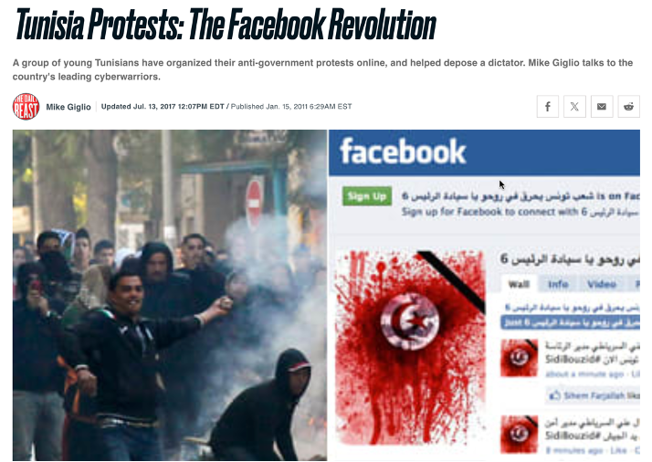

La revolución tunecina fue un hito significativo en la historia de las protestas y los movimientos sociales modernos, especialmente por el uso de las redes sociales para organizar y coordinar acciones.
Facebook y, en menor medida, Twitter fueron herramientas clave en esta revolución y explican porque se llegó a calificar de “Revolución Facebook”, debido al papel de las comunidades virtuales en la transmisión de la información en tiempo real desafiando la máquina de la censura gubernamental. Facebook sustituyó, en este sentido, el papel histórico de los medios convencionales, ocupando un nuevo espacio para informar en tiempo real.
Cuando estalló la revolución, la red de Mark Zuckerberg contaba con más de dos millones de usuarios tunecinos (2.359.640), sobre una población de 12 millones y el país ocupaba el quinto puesto en uso de Facebook, tanto a nivel del continente africano como del mundo árabe. El 65,55% de los internautas tunecinos tenían una cuenta Facebook y el 39% tenía entre 18 y 24 años .
Las páginas y grupos de Facebook sirvieron como plataformas donde los activistas podían compartir información, coordinar eventos y movilizar a la población. La capacidad de crear eventos permitió que las personas se unieran a las protestas de manera organizada y ayudó a generar conciencia y solidaridad tanto dentro como fuera del país. Las redes de apoyo internacionales también usaron Facebook para mostrar su solidaridad y para presionar a sus propios gobiernos a condenar la represión en Túnez.
